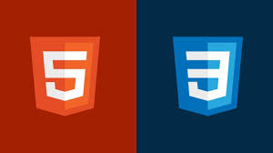
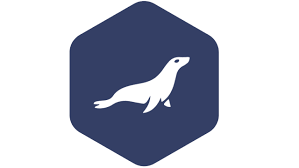

Soy estudiante en el ciclo de grado superior de Desarrollo de Aplicaciones Multiplataforma en el IES politécnico Hermenegildo Lanz en Granada, anteriormente graduado del Bachillerato en el IES José Marín en Vélez Rubio y consiguiendo superar la Selectividad. Además soy músico en la banda de María como clarinete. Me considero un aficionado a los ordenadores y la tecnología, con hobbies como los videojuegos y el manga, además de ser prácticante de pádel, natación, senderismo y ajedrez.
SOFT SKILLS
Solución de problemas
Creatividad
Comunicación y escucha activa
Trabajo en equipo
Adaptabilidad
Positividad a aa aaaaa aaaaaaa
HARD SKILLS
Java

HTML y CSS
Javascript
GitHub

MariaDB
AWS Server